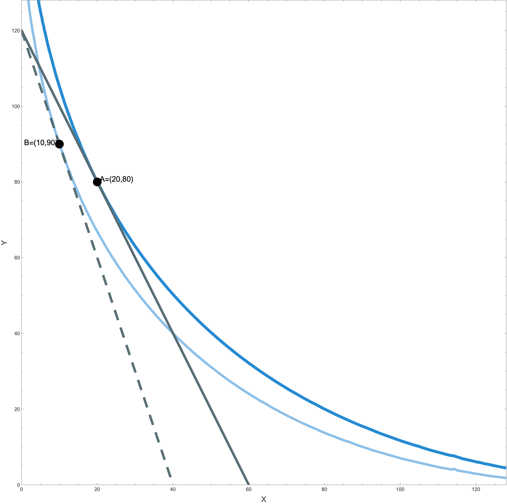
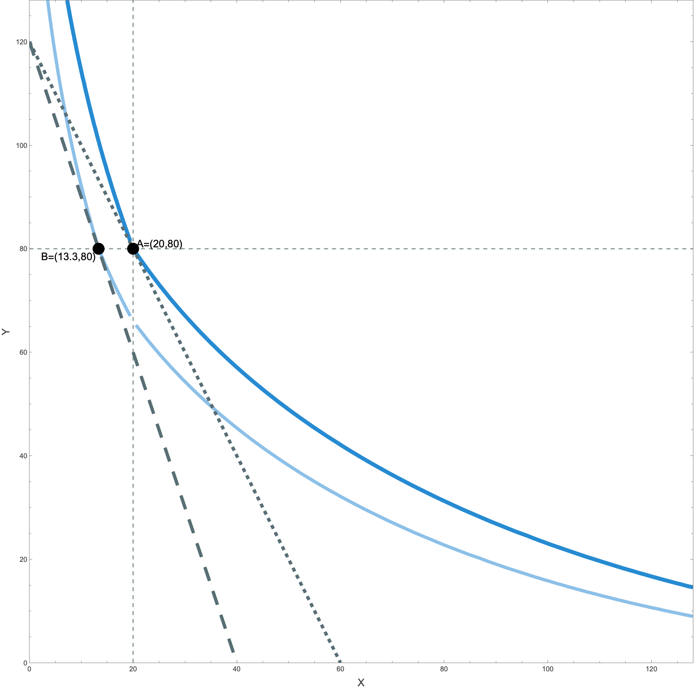

Individuals use as reference points:
| Economist.com offers | Price | |
|---|---|---|
| Option 1 | Web subscription | $59 |
| Option 2 | Print subscription | $125 |
| Option 3 | Print + web subscription | $125 |
Option 2 is the decoy: it costs the same as Option 3 and gives strictly less, so nobody should take it. Yet its presence makes Option 3 look like a bargain and pulls choices away from Option 1.
This model is a simplified version of Köszegi & Rabin (2006).
Let $u$ be either a utility for wealth or a gain-loss utility function. The point zero is either the initial wealth or the reference point, and we assume $u(0)=0$.
The loss-gain utility is a component of the overall utility. Its utility/disutility depends on how the consumption-utility of a good differs from the consumption-utility of its reference level.
A loss-gain utility $\mu$ as defined above displays loss aversion if and only if $L\gt G\gt 0$.
The reference basket $r=(\bar x,\bar y)$ splits the good space into four regions. Click a region to reveal the reference-dependent consumer's $\mathrm{MRS}$ there.
A consumer looks for the optimal basket $(x,y)$ on the budget line $p_X\,x+p_Y\,y=I$.
That happens in one of two ways:
Consider a traditional ($T$) consumer with utility $u_T(x,y)=\sqrt{x}+\sqrt{y}$, a consumer ($R$) with reference dependent utility, $$u_R(x,y\mid 20,80)=\sqrt{x}+\sqrt{y}+\mu(\sqrt{x}-\sqrt{20})+\mu(\sqrt{y}-\sqrt{80}),$$ where:
We assume that both consumers' incomes are $I_T=I_R=120$ and prices initially are $p_X=2$ and $p_Y=1$.
At these prices, the optimal choice for these consumers is to choose the basket $(20,80)$, which (by chance) coincides with the reference basket of the $R$ consumer.
Now suppose the price of $X$ rises to $p_X=3$ (with $p_Y=1$ and $I=120$ unchanged), so the budget line pivots about its $Y$-intercept $(0,120)$.
Budget lines before ($2x+y=120$, solid) and after ($3x+y=120$, dashed) the price change, with the indifference curves through the initial basket $A=(20,80)$ and the final basket $B=(10,90)$.

The same budget change. The indifference curves are kinked along the reference lines $x=\bar x$ and $y=\bar y$ (dotted). The consumer moves from $A=(20,80)$ to $B\approx(13.3,80)$, staying on the $y=\bar y$ kink line—$Y$ pinned at its reference level.
